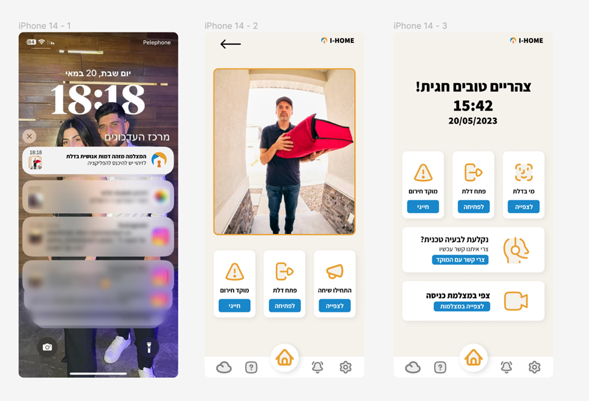
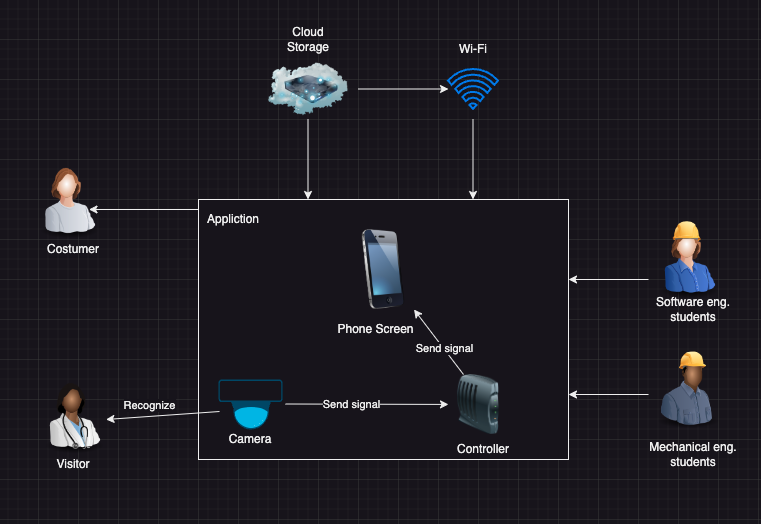
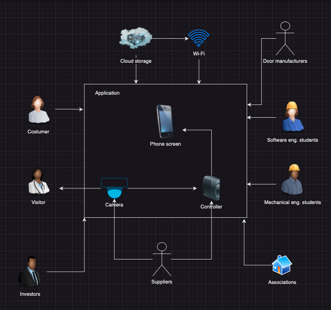

I-HOME
GitHub
Git RepositoryOur Vision
People who belong to a population with mobility disabilities encounter many difficulties in their daily lives. Our system will help those with disabilities to identify unexpected visitors, watch them from a distance, and have a conversation with them even if they are unable to reach the door immediately. In addition, the system will allow them to open the door from anywhere in their home if necessary or call for help from the emergency centers quickly if danger is detected.
Procuct Scope
Increase population sense of security
Allow conversations and door opening from distance
Persona - Hagit Brin

General Info
Name: Hagit Brin
Age: 53
Education: Computer science and statistics degree at Bar Ilan University
Workplace: Due to her medical condition she is not working
Relationship status: married
Resume
Hagit worked for 30 years at the organization
"Rafael - Advanced Combat Systems" as a programmer and systems analyst,
she was diagnosed with multiple sclerosis 12 years ago.
She gets around only with a crutch/cane/walker, likes to read and spend
time with family and friends and spends a lot of time at home alone.
Hagit is proficient in using smart devices - smartphone, tablet and laptop.
She finds it difficult to respond in average time to the arrival of guests/messengers at her door.
Interviews Summery
The most obvious thing we noticed in the interviews is the insecurity of the population we are discussing, about staying alone at home as well as their physical difficulty in walking to the front door of their home. As a result, helplessness arises on their part, as well as from their immediate environment, which finds itself in constant fear of leaving those dear to them all alone. It seems that there is a great need for a system that will assist them in an action that for the majority of the population seems so simple - opening the door of the house.
Questionaries Statistics
A firsthand familiarity with a person with a mobility impairment who has trouble reaching the door gave rise to the concept for the system. The system's goal is to provide a solution that will make those situations easier to handle. As a result, we were interested in determining how frequently the respondents had faced such a situation.
Based on the responds to the scenarios, it appears that not arriving to the door on timecauses them to get very frustrated.
Accordingly, it is implied that there is a need for a special notification system for the respondents.
90%(!!) of the responders were interested in the system we offered and said that they would even pay for it.
We saw that there is a demand for routing calls to emergency centers through the app.
Functional Requierments
1. The system will allow remote door opening.
2. The system will allow quick dialing to emergency centers.
3. The system will allow notifications to be displayed.
4. The system will allow connection to the camera.
5. The system will allow video presentation.
Prototype
Our system includes a camera and controller. When the sensor of the camera will identify a person, it will send a signal to the controller which send notification to user. After he opens the notification, he will see live video of the person that near his door – he can start conversation with him, open the door or if he recognize some dangerous he can call to emergency directly from the screen.
Population Feedback
After we finished building the prototype we presented it to a number of potential users for feedback. The vast majority liked the system very much and considered it easy to use. In addition, in accordance with the idea for additions to the system that came up in one of the questionnaires, we checked with the users whether they were interested in a chat add-on so that they could chat with each other and spend their time pleasantly when they are alone at home. To our surprise, we saw a willingness on the part of some users to use the plugin, so this is definitely an option to improve the system in the future.
Main MOV
Within three months the user will be able to open the door remotely more than 95% of the times he tries and the average time between the reception of the guest by the sensor to display the notification in the application will be maximum 5 seconds.
Alternatives
Alternative A - self-development which includes hiring developers and purchasing a server.
Alternative B - outsourcing, contacting a software house that will take care of the development.
Alternative C - development in a cloud environment by renting the services of AWS.
Decision
The overall goal of the system is social with the aim of helping a population with mobility disabilities, therefore the quality of the system is the most important. Accordingly, we believe that alternative C is the best according to our vision.
Architecture
Non-Functional Requierments and Quality Attributes
- Remote door opening will be possible provided the door has an electronic cylinder.
- The opening of the door will be performed by a user defined for the specific door only.
- The system will be blocked for external access by unauthorized parties.
- Dialing to the emergency centers will be done within 5 seconds at the most from the moment of pressing.
- The time between the user's command to open the door in the system and the door opening should not exceed 5 seconds.
- From the moment the sensor recived signal from the camera, maximum 10 seconds will pass until the customer receives the notification.
- The application will be a web application.
- The system will create a backup for the data
- The user will be able to connect to the system by interfacing with another system such as Google in order to facilitate the login process.
Main Risks
- Camera does not detect movement.
- The door opens without the customer's request (or not open when there is opening request).
- Routing a call to the emergency center fails.
- The controller speaker is not functioning.
Technical Debts
-
Simple external hardware selection
Solution: Choose more expensive and reliable hardware devices.
-
Poor software code quality.
Solution: Hire at least one expert developer that will manage the team.
-
Documentation
Solution: Managers must make the employees responsible for the documentation and be monitored for the execution of the documentation.
Stakeholders
SDT
The user will feel a sense of competence when he can manage the process through use of the app only, without interruption due to his mobility disability.
the system will allow the user independence and neutralize his dependence on other people
The application will allow the users to feel a little bit "normal"
Algorithm Transparency
The system detects people using a motion sensor, accordingly there is no differentiation of who the person is in front of the sensor, the alert will be sent in any case.
Challenges
Our main challenge was to understand how to work with the controller and
how to integrate it with camera and mobile phone.
As you can, at the end of times we decided to give up using the camera
due to the lack of time until the introduction of the system.